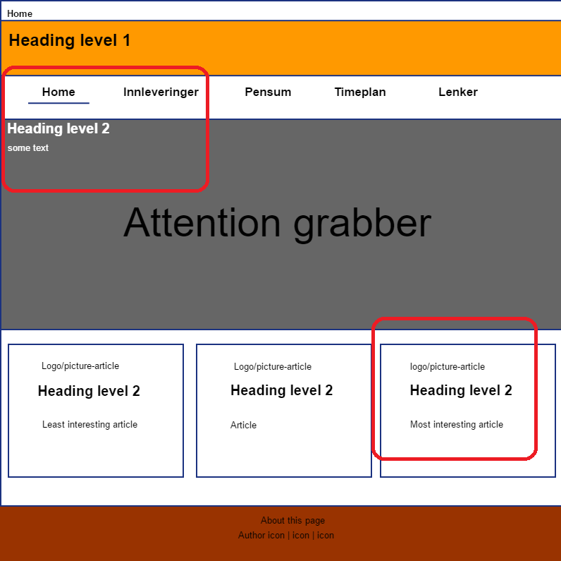
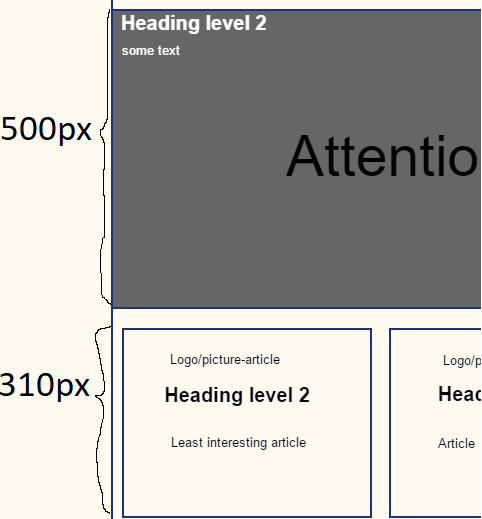
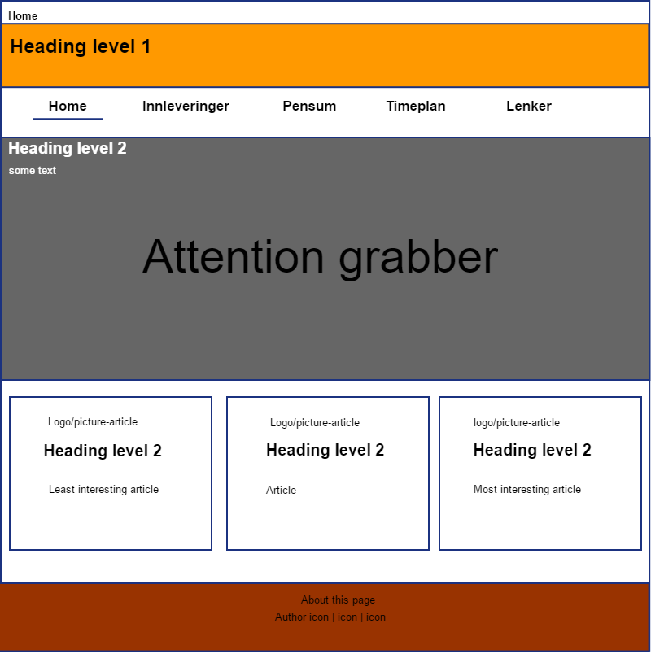
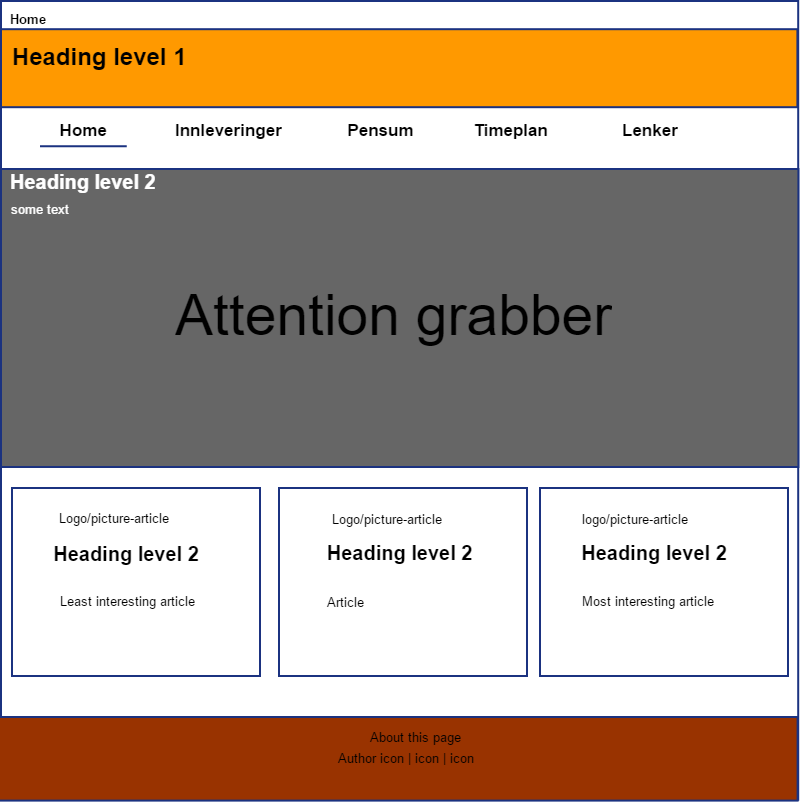

Teori
Kundesegmentering
Ettersom det vil være vanskelig å designe noe med hensyn på en "gjennomsnittsleser", bør man heller fokusere på de man ønsker at skal komme til å lese siden.
Samtidig er det vanskelig å kvantifisere både en gjennomsnittsbruker, og "interessanthet"
I mitt tilfelle har jeg valgt nerder, eller rettere sagt meg selv, og ikke mannen i gata. Dette vil trolig fremgå lengst nede på siden, i valg av inspirasjonskilder.
Praktiske hensyn
Samtidig som man ønsker å designe noe for en spesifikk målgruppe bør man tilrettelegge veien for disse, og ikke gjøre deres reise på siden vanskelig.
Har man irretert en bruker er det ikke sikkert at denne ønsker å lese videre, eller å komme tilbake. Man skal f.eks ikke tvinge en bruker til å lese instruksjoner, brukeren skal handle etter et intuitivt design.
Dette må man spesielt passe på for en side som er "triviell" (Slik som denne).
De fleste har med skrekk og gru gått inn på Lånekassen/Udir eller liknende, attpåtil er dette steder man er nødt til å besøke.
Navigasjonsmeny
En navigasjonsmeny vil fungere som et veikart for brukeren, slik at han/hun vet hvor hen er på siden. Gitt at man har flere artikler nedover, vil dette lette navigasjonen betraktelig.
Navigasjonsmenyen er tatt i bruk på denne siden, med en farge som viser at den eksisterer, men samtidig ikke er prangende.
Navigasjonsmenyen er gjort "fixed" (I CSS) for at brukeren skal slippe å navigere seg opp/ned til menyen, for dermed å risikere å miste fokus.
Man setter gjerne ikke pris på en navigasjonsmeny før den er borte. Samtidig må ikke en navigasjonsmeny bli for omfattende.
Lenketagger
Lenketagger, slik som hover, target, visited etc. lar brukeren vite at han/hun kan interagere, har interagert med siden og i så tilfelle: hvor. Lenketagger er til for å brukes!
Man kan også gjøre dette på en subtil måte, hvilket jeg har prøvd å gjøre her.
Det er vesentlig med et interaktivt design ettersom brukeren da kan handle etter instinkt og ikke en håndbok.
Dette vil bedre brukeropplevelsen i form av at denne ikke blir for frustrert.
Brødsmuler
Brødsmule (breadcrumbs) er kallenavnet på skriften øverst på siden over headeren, og skal fungere som et kart for å vise brukeren hvor han/hun er på siden.
Ideelt sett skal denne være rett over headeren, med aktiv posisjon i tykk skrift og de tidligere stiene som url-er, med dette kan brukeren lettere finne en rødtråd i designet.
Brødsmuler er også implementert på denne siden
Lesbarhet: bruk av fonter og farge
Fargelære
Farger er et effektivt virkemiddel for at ting skal få mer oppmerksomhet, dog disse bør ikke bli tilfeldig valgt.
Fargene kan enten være komplimentære, monokromatiske, analoge eller benytte en geometrisk avstand på fargehjulet. Jeg har valgt et analogt fargevalg, med den sterkeste fargen (Oransje) på header,
brun som footer (mest nøytral, og "minst" viktig). Samtidig er hovedfargen på siden en mellomting av lys rosa og hvit, noe som gir en kontrast som ikke virker blendende, og hjelper siden å skilles ut på en nøytral måte.
For et eksempel på en god generator,
se W3-schools sin generator
Fonter
Ved valg av fonter bør man velge en font som ikke er serif. I mitt tilfelle har jeg valgt Oswald og Roboto: to veldig populære IT-fonter (Og som tilfeldigvis er gratis).
Kunst og geometri
Midtstilling
Siden tar aktivt i bruk marger for at denne skal midtstilles, dette gjøres for at elementene skal stilles i sentrum fordi det er der øynene våre vil være.
Margene på siden vil også gi en kontrast iforhold til det som faktisk er siden.
Bruk av bilde på forsiden
Bildet på forsiden er brukt for å gi en kontrast, og for å være et blikkfang. Det er også valgt fordi det er webrelatert. Artisten bak bildet er en artist som heter Ilya Pavlov, og siden det er hentet ifra heter.
Bildet interagerer også med brukeren i form av at det gir en parallakse-effekt når man blar nedover, og bidrar til at skriften viser tydeligere.
Det gyldne snitt
Definisjon
Fibonaccirekken er 0, 1, 1, 2, 3, 5, 8, 13, 21, 34.... De som er smarte ser allerede at dette kan uttrykkes som en fibonacci følge.
Å dele et av tallene på det foregående ledd vil gi Φ, som i veldig simplifisert form vil gi 1.61.
Dess lenger ut i rekka man kommer, jo bedre verdi får du. Φ er i likhet med både π og e et irrasjonelt tall.
Det sies ofte at kunst som bruker det gyldne snitt vil fremstå appelerende for våre øyne.
Posisjonering

I mitt tilfelle har jeg benyttet en simplifisert form for det gyldne snitt, ved å ha de mest interessante ting øverst til høyre, og nede til venstre.Det er gjerne her våre øyne først begynner å se.
Navigasjonsmenyen på toppen sin rekkefølge er dermed ikke tilfeldig, med de mest spennende ting mot venstre og de minst (Personalia) til høyre. Posisjoneringen av teksten på bildet er heller ikke tilfeldig.
Areal
Å bruke dette vil i praksis si - meget fordummet (og direkte smertefullt å skrive for en som kan matte) - at forholdet mellom to element er 3:2, eller 60% og 40%.
Dette prinsippet brukes særlig to steder: på hovedsiden, og på artikkelsidene.
Arealet benytter det gyldne snitt når det gjelder artikkelboksene på hovedsiden, og blikkfanget ovenfor dette.  Dette kan vi se utifra at hovedbildet er 500px høyt, mens artiklene under er rundt 310 (med margin).
På denne artikkelsiden benyttes dette mellom navigasjonsmenyen og artikkelen.
Planskisser oppsummert
Planskissene er tegnet i gratisprogrammet Pencil, som er tilgjengelig for de fleste operativsystemer.
Plantegningene vises under. Mal for artikkel finnes på Mal
 

Inspirasjon
| URL |
Kommentar |
| https://ludicrumedia.com/ |
Den ene hjemmesiden til foreleseren min, den tar for seg veldig lik posisjonering, samt likt prinsipp med ikoner og nav-meny. |
| http://ask.hiof.no/~magnussm/ |
En tilfeldig hjemmeside jeg snublet over. Jeg likte veldig god bildet med parallakse. |
| http://www-ia.hiof.no/~matsjm/sem7/webutvikling/webutvikling.html |
En tildelig side jeg snublet over |
| http:www.ionracing.no/ |
Jeg har sett litt på denne siden for inspirasjon. Legg blant annet merke til menyen og understrek. |
| http://uissubsea.no/ |
Posisjonering av ikoner, stort sett. Jeg har også et ganske likt utgangspunkt med et stort bilde, og tre små artikler. |
{kind=link}